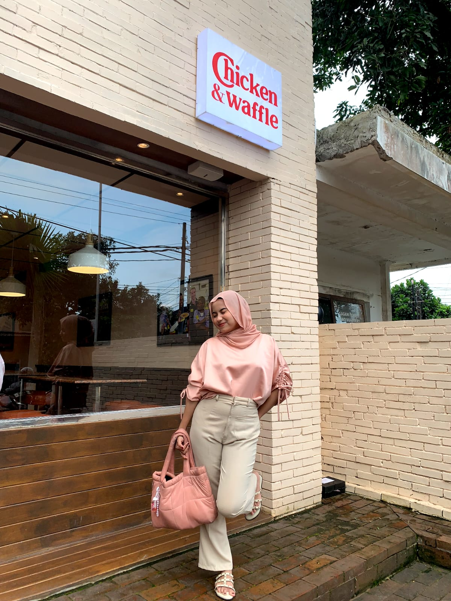

Profil
- Nama : Syarifah Insan Sekartini
- Tempat & Tanggal Lahir : Sleman, 24 April 2002
- Alamat : Mlati, Sleman, Yogyakarta
- Hobby : Menonton Film, bermain game
-
Instagram
Tentang saya
Saya merupakan Mahasiswa Sistem Informasi semester 5 di UPN "Veteran" Yogyakarta.
Saya mengikuti pelatihan dari ZettaCamp agar dapat menjadi Web Developer